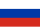

The Wolf Prize in Mathematics is awarded almost annually[a] by the Wolf Foundation in Israel. It is one of the six Wolf Prizes established by the foundation and awarded since 1978; the others are in agriculture, chemistry, medicine, physics and arts. The Wolf Prize includes a monetary award of $100,000.[1]
According to a reputation survey conducted in 2013 and 2014, the Wolf Prize in Mathematics is the third most prestigious international academic award in mathematics, after the Abel Prize and the Fields Medal.[2][3]
Laureates
| Year | Name | Nationality | Citation |
|---|---|---|---|
| 1978 | Israel Gelfand | Soviet Union | for his work in functional analysis, group representation, and for his seminal contributions to many areas of mathematics and its applications. |
| Carl L. Siegel | for his contributions to the theory of numbers, theory of several complex variables, and celestial mechanics. | ||
| 1979 | Jean Leray | France | for pioneering work on the development and application of topological methods to the study of differential equations. |
| André Weil | France | for his inspired introduction of algebraic-geometric methods to the theory of numbers. | |
| 1980 | Henri Cartan | France | for pioneering work in algebraic topology, complex variables, homological algebra and inspired leadership of a generation of mathematicians. |
| Andrey Kolmogorov | Soviet Union | for deep and original discoveries in Fourier analysis, probability theory, ergodic theory and dynamical systems. | |
| 1981 | Lars Ahlfors | for seminal discoveries and the creation of powerful new methods in geometric function theory. | |
| Oscar Zariski | creator of the modern approach to algebraic geometry, by its fusion with commutative algebra. | ||
| 1982 | Hassler Whitney | for his fundamental work in algebraic topology, differential geometry and differential topology. | |
| Mark Krein | Soviet Union | for his fundamental contributions to functional analysis and its applications. | |
| 1983/84 | Shiing-Shen Chern | for outstanding contributions to global differential geometry, which have profoundly influenced all mathematics. | |
| Paul Erdős | Hungary | for his numerous contributions to number theory, combinatorics, probability, set theory and mathematical analysis, and for personally stimulating mathematicians the world over. | |
| 1984/85 | Kunihiko Kodaira | for his outstanding contributions to the study of complex manifolds and algebraic varieties. | |
| Hans Lewy | for initiating many, now classic and essential, developments in partial differential equations. | ||
| 1986 | Samuel Eilenberg | for his fundamental work in algebraic topology and homological algebra. | |
| Atle Selberg | Norway | for his profound and original work on number theory and on discrete groups and automorphic forms. | |
| 1987 | Kiyoshi Itō | for his fundamental contributions to pure and applied probability theory, especially the creation of the stochastic differential and integral calculus. | |
| Peter Lax | Hungary |
for his outstanding contributions to many areas of analysis and applied mathematics. | |
| 1988 | Friedrich Hirzebruch | for outstanding work combining topology, algebraic geometry and differential geometry, and algebraic number theory; and for his stimulation of mathematical cooperation and research. | |
| Lars Hörmander | for fundamental work in modern analysis, in particular, the application of pseudo-differential operators and Fourier integral operators to linear partial differential equations. | ||
| 1989 | Alberto Calderón | Argentina | for his groundbreaking work on singular integral operators and their application to important problems in partial differential equations. |
| John Milnor | for ingenious and highly original discoveries in geometry, which have opened important new vistas in topology from the algebraic, combinatorial, and differentiable viewpoint. | ||
| 1990 | Ennio De Giorgi | for his innovating ideas and fundamental achievements in partial differential equations and calculus of variations. | |
| Ilya Piatetski-Shapiro | Soviet Union |
for his fundamental contributions in the fields of homogeneous complex domains, discrete groups, representation theory and automorphic forms. | |
| 1991 | No award | ||
| 1992 | Lennart Carleson | for his fundamental contributions to Fourier analysis, complex analysis, quasi-conformal mappings and dynamical systems. | |
| John G. Thompson | for his profound contributions to all aspects of finite group theory and connections with other branches of mathematics. | ||
| 1993 | Mikhail Gromov |  RussiaFrance |
for his revolutionary contributions to global Riemannian and symplectic geometry, algebraic topology, geometric group theory and the theory of partial differential equations; |
| Jacques Tits | France |
for his pioneering and fundamental contributions to the theory of the structure of algebraic and other classes of groups and in particular for the theory of buildings. | |
| 1994/95 | Jürgen Moser | Switzerland |
for his fundamental work on stability in Hamiltonian mechanics and his profound and influential contributions to nonlinear differential equations. |
| 1995/96 | Robert Langlands | Canada | for his path-blazing work and extraordinary insight in the fields of number theory, automorphic forms and group representation. |
| Andrew Wiles | for spectacular contributions to number theory and related fields, major advances on fundamental conjectures, and for settling Fermat's Last Theorem. | ||
| 1996/97 | Joseph B. Keller | for his profound and innovative contributions, in particular to electromagnetic, optical, and acoustic wave propagation and to fluid, solid, quantum and statistical mechanics. | |
| Yakov G. Sinai | Russia |
for his fundamental contributions to mathematically rigorous methods in statistical mechanics and the ergodic theory of dynamical systems and their applications in physics. | |
| 1998 | No award | ||
| 1999 | László Lovász | Hungary |
for his outstanding contributions to combinatorics, theoretical computer science and combinatorial optimization. |
| Elias M. Stein | for his contributions to classical and Euclidean Fourier analysis and for his exceptional impact on a new generation of analysts through his eloquent teaching and writing. | ||
| 2000 | Raoul Bott | Hungary |
for his deep discoveries in topology and differential geometry and their applications to Lie groups, differential operators and mathematical physics. |
| Jean-Pierre Serre | France | for his many fundamental contributions to topology, algebraic geometry, algebra, and number theory and for his inspirational lectures and writing. | |
| 2001 | Vladimir Arnold | Russia | for his deep and influential work in a multitude of areas of mathematics, including dynamical systems, differential equations, and singularity theory. |
| Saharon Shelah | for his many fundamental contributions to mathematical logic and set theory, and their applications within other parts of mathematics. | ||
| 2002/03 | Mikio Sato | for his creation of algebraic analysis, including hyperfunction theory and microfunction theory, holonomic quantum field theory, and a unified theory of soliton equations. | |
| John Tate | for his creation of fundamental concepts in algebraic number theory. | ||
| 2004 | No award | ||
| 2005 | Gregory Margulis | Russia |
for his monumental contributions to algebra, in particular to the theory of lattices in semi-simple Lie groups, and striking applications of this to ergodic theory, representation theory, number theory, combinatorics, and measure theory. |
| Sergei Novikov | Russia | for his fundamental and pioneering contributions to algebraic and differential topology, and to mathematical physics, notably the introduction of algebraic-geometric methods. | |
| 2006/07 | Stephen Smale | for his groundbreaking contributions that have played a fundamental role in shaping differential topology, dynamical systems, mathematical economics, and other subjects in mathematics. | |
| Hillel Furstenberg | for his profound contributions to ergodic theory, probability, topological dynamics, analysis on symmetric spaces and homogeneous flows. | ||
| 2008 | Pierre Deligne | for his work on mixed Hodge theory; the Weil conjectures; the Riemann-Hilbert correspondence; and for his contributions to arithmetic. | |
| Phillip A. Griffiths | for his work on variations of Hodge structures; the theory of periods of abelian integrals; and for his contributions to complex differential geometry. | ||
| David B. Mumford | for his work on algebraic surfaces; on geometric invariant theory; and for laying the foundations of the modern algebraic theory of moduli of curves and theta functions. | ||
| 2009 | No award | ||
| 2010 | Shing-Tung Yau | for his work in geometric analysis that has had a profound and dramatic impact on many areas of geometry and physics. | |
| Dennis P. Sullivan | for his innovative contributions to algebraic topology and conformal dynamics. | ||
| 2011 | No award | ||
| 2012 | Michael Aschbacher | for his work on the theory of finite groups. | |
| Luis Caffarelli | Argentina | for his work on partial differential equations. | |
| 2013 | George D. Mostow | for his fundamental and pioneering contribution to geometry and Lie group theory. | |
| Michael Artin | for his fundamental contributions to algebraic geometry, both in commutative and noncommutative. | ||
| 2014 | Peter Sarnak | South Africa |
for his deep contributions in analysis, number theory, geometry, and combinatorics. |
| 2015 | James G. Arthur | Canada | for his monumental work on the trace formula and his fundamental contributions to the theory of automorphic representations of reductive groups. |
| 2016 | No award | ||
| 2017 | Richard Schoen | for his contributions to geometric analysis and the understanding of the interconnectedness of partial differential equations and differential geometry. | |
| Charles Fefferman | for his contributions in a number of mathematical areas including complex multivariate analysis, partial differential equations and sub-elliptical problems. | ||
| 2018 | Alexander Beilinson | Russia |
for their work that has made significant progress at the interface of geometry and mathematical physics. |
| Vladimir Drinfeld | Ukraine | ||
| 2019 | Jean-Francois Le Gall | France | for his several deep and elegant contributions to the theory of stochastic processes. |
| Gregory Lawler | for his comprehensive and pioneering research on erased loops and random walks.[4] | ||
| 2020 | Simon K. Donaldson | for their contributions to differential geometry and topology.[5] | |
| Yakov Eliashberg | |||
| 2021 | No award | ||
| 2022 | George Lusztig | Romania Hungary |
for his groundbreaking contributions to representation theory and related areas.[6] |
| 2023 | Ingrid Daubechies | for her work in wavelet theory and applied harmonic analysis.[7] | |
| 2024 | Adi Shamir | for his fundamental contributions to Mathematical Cryptography.[8] | |
| Noga Alon | for his fundamental contributions to Combinatorics and Theoretical Computer Science.[9] | ||
| 2025 | No award | ||
Laureates per country
Below is a chart of all laureates per country (updated to 2024 laureates). Some laureates are counted more than once if they have multiple citizenships.
| Country | Number of laureates |
|---|---|
| 34 | |
| Soviet Union / Russia | 10 |
| France | 7 |
| 5 | |
| Hungary | 5 |
| 3 | |
| 3 | |
| 2 | |
| 2 | |
| Canada | 2 |
| Argentina | 2 |
| 2 | |
| Ukraine | 2 |
| South Africa | 1 |
| 1 | |
| 1 | |
| 1 | |
| Norway | 1 |
| 1 | |
| Romania | 1 |
Notes
- ^ The Wolf Foundation describes the prize as annual; however, some prizes are split across years, while in some years no prize is awarded.
See also
References
- ^ "The Wolf Prize". Wolf Foundation. Retrieved 6 June 2024.
- ^ IREG Observatory on Academic Ranking and Excellence. IREG List of International Academic Awards (PDF). Brussels: IREG Observatory on Academic Ranking and Excellence. Retrieved 3 March 2018.
- ^ Zheng, Juntao; Liu, Niancai (2015). "Mapping of important international academic awards". Scientometrics. 104 (3): 763–791. doi:10.1007/s11192-015-1613-7.
- ^ Wolf Prize 2019 - Mathematics
- ^ Wolf Prize 2020 - Mathematics
- ^ "Wolf Prize 2022 - Mathematics". Archived from the original on 2022-02-08. Retrieved 2022-02-08.
- ^ "Wolf Prize 2023 - Mathematics". Archived from the original on 2023-02-07. Retrieved 2023-02-07.
- ^ Wolf Prize 2024 - Mathematics
- ^ Wolf Prize 2024 - Mathematics
External links
- "The Wolf Foundation Prize in Mathematics".
- "Huffingtonpost Israel-Wolf-Prizes 2012". Huffington Post. 10 January 2012.
- "Jerusalempost Israel-Wolf-Prizes 2013". 13 December 2011.
- Israel-Wolf-Prizes 2015
- Jerusalempost Wolf Prizes 2017
- Jerusalempost Wolf Prizes 2018
- Wolf Prize 2019